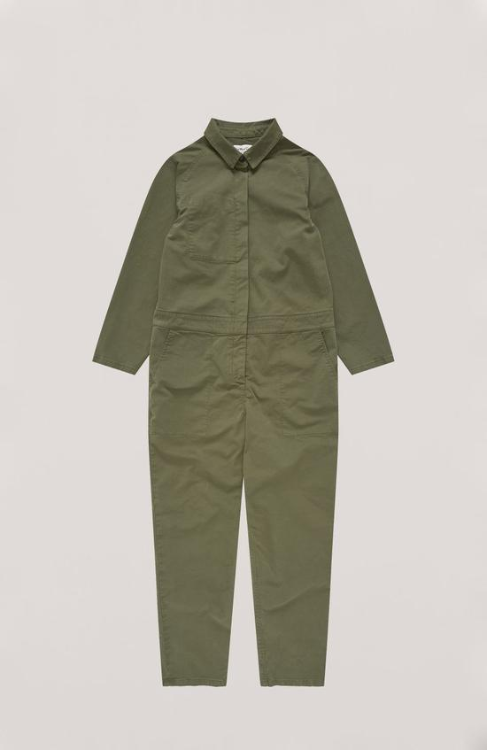
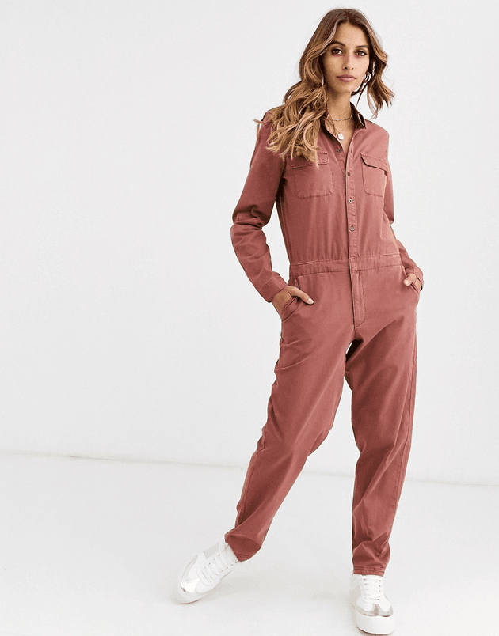
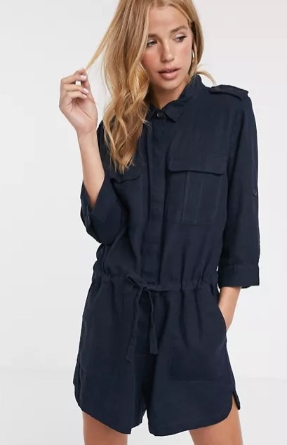
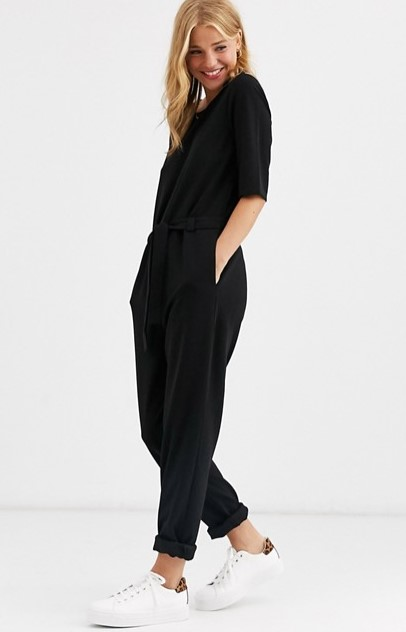
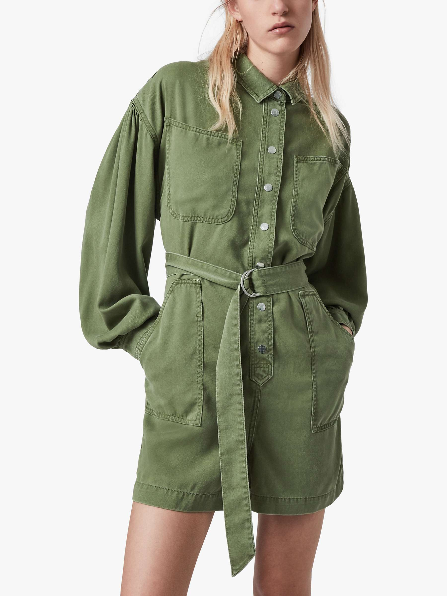
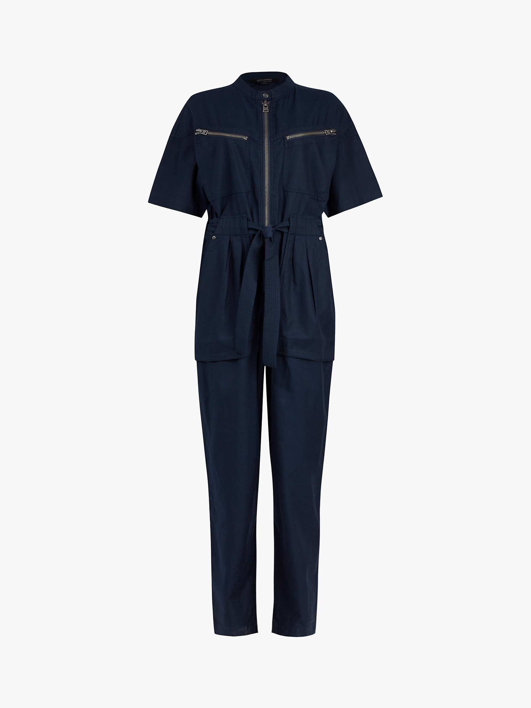

첫 점프수트는 2011년에 구매한 테드베이커 였구
2012-2014년쯤 켄트지역 휴가갔을때 입은 얼반아웃피터스 깜장이 슬리브리스가 있었더랬죠.
점프수트라는게 화장실 갈 때만 제외하곤 정말 편한데
2020년 1월 드라마 동백꽃필무렵 보고 YMC 점프수트에 꽂혀 구매하게 된 이후로
호기심에 또 이것저것 질러봤습니당;;;

YMC 보일러수트
강릉 갔을 때 입었는데 소감은
푸대자루에 들어가 있는것 같다. 겁나 편하다!! 였습니다 ㅋㅋㅋ
몸의 모든 긴장감(?)을 놔도 될 것 같은 편안함 ㅋㅋㅋ
입고 종일 돌아다녔는데 정말 편했다는 기억이 있네요 ㅋㅋㅋ
죠 위에 YMC 제품 핑크는 공효진 배우가 드라마에 입고 나와서 그런지 진작에(?) 품절이라 올리브색을 구매하게 된건데 미련을 버리지 못하고 다른 브랜드 핑크색을 구매

VERO MODA 이 브랜드도 은근 괜춘한 제품이 많습니다.


그리고 긴팔긴바지를 샀으니 여름용이 사고싶다 - 하여 구매하고 아직 한번도 못 입은 두벌과;;


올세인츠에서 호기심에 사본 두벌;;;
요 두벌 같이 구매할 때 위에 카키색은 좀 긴가민가 했었는데
막상 받아서 입어보니 어울리는건 카키색 쪽이더군욤;;
역시 사진이랑 직접 입어보는 거랑은 달라요;;
올해는 힘내서(?) 요놈들 다 입고 돌아댕겨야 겠습니다;; 맨날 옷장만 배불려;;;